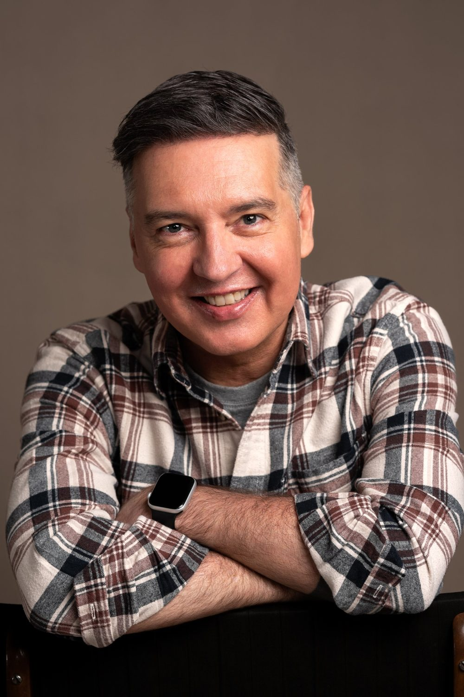

I've always been interested in why people do what they do.
That question took me from the stage, to the newsroom, to the executive committee, and now into rooms full of leaders and teams who want to work better together.

The short version
I'm a team coach, trainer and Enneagram practitioner based in Cape Town, and the founder of ReadyPeople Training & Coaching Consultancy. I work with leadership teams, operational teams and service teams, mostly in financial services, and also in hospitality, retail, technology and education, in Cape Town, Johannesburg and across South Africa, as well as in Europe and Asia, in person or online.
My core argument is simple. Culture change and customer experience training fail when they only work at the level of behaviour. Lasting change comes from addressing what's upstream: the mental models people hold, and the psychological needs that are or aren't being met.
I'm not a motivational speaker, and I don't do culture interventions for their own sake. I build the human foundations that make culture work possible, and I measure what changes.
The longer version
- Actor, journalist and creative directorWhere I learnt to listen, to observe and to use story. An Honours degree in Dramatic Arts and a Master's in Journalism and Media Studies.
- Head of People and Development, Old Mutual iWyzeA seat on the executive committee taught me the pressures, politics and potential of corporate life from the inside.
- Founder, ReadyPeopleTraining and coaching for clients including Henkel, TymeBank, MultiChoice, Momentum, The Capital Hotel Group and AngloGold Ashanti. Double winner at the 2026 African Excellence Awards. Press and recognition.
- Author and speakerThriving Culture, and a TEDx talk at TEDxRiversdale.
Credentials
- Professional Certified Coach (PCC)International Coaching Federation
- Advanced Certification in Team Coaching (ACTC)International Coaching Federation
- Accredited iEQ9 Enneagram PractitionerIndividuals and teams
- Transactional Analysis and Emotional Intelligence PractitionerMember of the South African Transactional Analysis Association
- Master's in Journalism and Media StudiesPostgraduate
- Honours in Dramatic ArtsPostgraduate
Questions people ask
Who is Clive Vanderwagen?
Clive Vanderwagen is a Cape Town-based team coach and trainer who specialises in customer experience training and in leadership and team dynamics. He is the founder of ReadyPeople Training & Coaching Consultancy, the author of Thriving Culture, a TEDx speaker, and an ICF Professional Certified Coach with the Advanced Certification in Team Coaching.
What is Clive Vanderwagen's approach?
His core argument is that culture change and customer experience training fail when they only work at the level of behaviour. Lasting change comes from addressing what's upstream: the mental models people hold and the psychological needs that are, or aren't, being met at work.
Is Clive Vanderwagen a motivational speaker?
No. His talks and workshops deal with what drives behaviour at work and give people practical tools to change it. He measures what changes afterwards.
What is the book Thriving Culture about?
Thriving Culture argues that culture is a leadership problem, not a communications one. It draws on Transactional Analysis, the Enneagram, Functional Fluency, and the Drama Triangle and Empowerment Dynamic, and includes a full customer experience case study.
What recognition has Clive Vanderwagen's work received?
ReadyPeople was a double winner at the 2026 African Excellence Awards, and Clive was named Customer & Employee Experience Training Specialists of the Year 2025 at the MEA Business Awards. See press and recognition.
If your people work hard and the results still don't move, let's talk about why.
A 30-minute discovery call. You tell me what's happening, I'll tell you honestly whether I can help and what it would take.